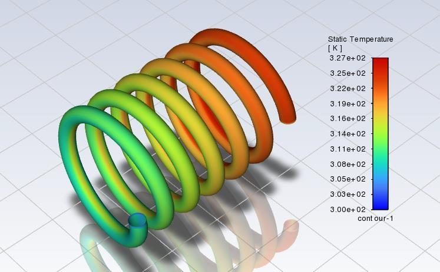
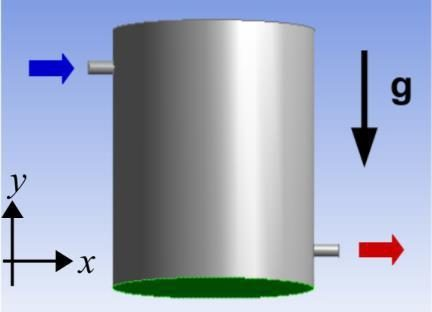
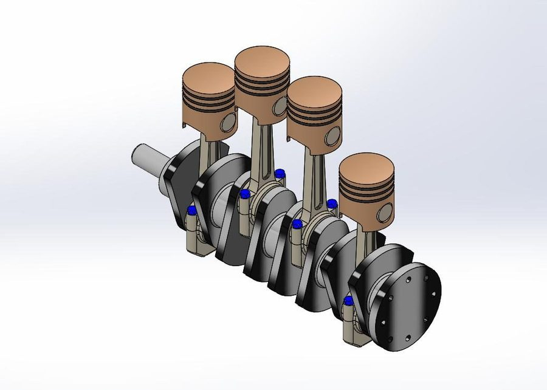
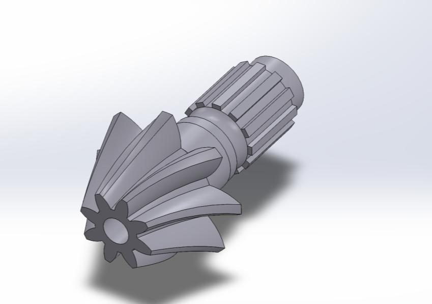
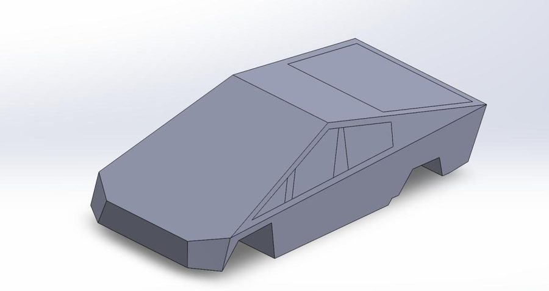

Mechanical Engineer · M.S., Arizona State University
Design, simulation and analysis of mechanical systems.
I model parts and assemblies in SolidWorks and CATIA, and analyze them with CFD and FEA in Ansys, Abaqus and my own MATLAB finite element code.

01
About
I hold an M.S. in Mechanical Engineering from Arizona State University, with coursework in finite element engineering, applied CFD, robot modeling and control, and design of experiments. My background runs from machine design and thermal-fluid engineering to hands-on manufacturing.
My academic projects centre on validating numerical results: mesh refinement, Richardson extrapolation, and comparison against hand calculations or closed-form solutions. I am looking for mechanical design, simulation and product development roles.
02
Technical skills
CAD & design
SolidWorks · CATIA V5 · PTC Creo · AutoCAD · Fusion 360 · GD&T
Simulation & analysis
Ansys Fluent · Abaqus · COMSOL Multiphysics · MATLAB FEM
Manufacturing
CNC machining · lathe · milling · 3D printing · metrology & quality control · equipment qualification (IQ/OQ/PQ)
Automation & controls
MATLAB & Simulink · Arduino IDE · robotics kinematics
Programming & data
Python · Matplotlib · CNC G-code · JMP (design of experiments)
03
Selected projects

Fluid & Thermal
Helical Pipe Heater: Conjugate Heat Transfer
A helical heater modeled from its defining equations and solved as 3D conjugate heat transfer, checked against hand calculations.
Ansys Fluent · SolidWorks
Fluid & Thermal
Buoyancy-Driven Convection in a Water Tank
Transient natural convection in a cylindrical tank with a heated base, run at Earth and Moon gravity.
Ansys Fluent · SolidWorks
Fluid & Thermal
Gas Leakage Dynamics in a Warehouse
Multiphase simulation of a methane leak and how fresh-air injection changes where the gas goes.
Ansys Fluent · VOF multiphase
Aerodynamics
Saucer-Shaped Drone: 3D External Aerodynamics
Transient 3D flow past a saucer-shaped body tilted at 0°, 22.5° and 45° in a virtual wind tunnel.
Ansys SpaceClaim · Fluent
Aerodynamics
Vehicle Aerodynamic Drag with Add-on Devices
CFD study of how a spoiler and a wing change drag and lift on a passenger-car model.
CATIA V5 · Ansys Workbench FluentMechanical design and CAD





Additional studies
- Compressible air jet from a pressurized chamberFluent
- Subsonic and supersonic nozzle flowFluent
- Vortex shedding: circular vs elliptical cylinderFluent
- External flow around pentagon-shaped buildingsFluent
- Inclined droplet dynamics: engine oil vs mercuryFluent, VOF
- Oscillating U-tube two-phase flowFluent, VOF, SolidWorks
- Stress concentration in plexiglass plates: FEM vs Roark vs AbaqusAbaqus, MATLAB
- Tension-loaded PMMA plate and mesh studyAbaqus
- Steady-state heat conduction with volumetric heatingMATLAB, Abaqus
- Design of experiments: racetrack and tire setupJMP
- Humanoid hand: SolidWorks prototype and 20-DOF MATLAB appSolidWorks, MATLAB
- Highway decision-making with DQN, DDQN and Dueling DQNPython, RL
04
Experience and education
Manufacturing Engineer · Medivant Healthcare
Sterile pharmaceutical manufacturing, Phoenix, AZ.
- Designed and developed electromechanical and mechanical assemblies for prototype robotics systems in SolidWorks, optimizing structures, mechanisms, power transmissions and thermal management.
- Led installation and qualification (IQ/OQ/PQ) of 6 pharmaceutical equipment systems, including vial fillers, autoclaves and stability chambers, in ISO 7/5 cleanrooms.
Mechanical Engineer · L.G. Salads
Controlled-environment agriculture equipment.
- Re-engineered vertical farm grow units with parametric modeling, reducing manufacturing time by 30% and lifting process efficiency 9.7%.
- Delivered 3 enclosure and control panel designs from concept to fabrication in 4 months, with drawing packages, BOMs, jigs and fixtures.
- Achieved zero moisture-related failures in washdown areas through stainless steel, gasket and hardware selection validated in SolidWorks Simulation.
Mechanical Product Design Engineer · S.M. Auto Pvt. Ltd.
Automotive R&D: sheet metal body and electrical systems.
- Designed and optimized 15+ sheet metal door panel components, cutting panel weight by 0.8 kg per door while meeting structural and safety requirements.
- Built SolidWorks models and ran 40+ FEA simulations in ANSYS on door panels, hood, side mirrors and bumpers, improving simulated durability by 10%.
- Led DFM/DFA changes across 4 prototype builds, managing BOMs for 200+ parts and cutting fit-check rework by 2 weeks.
- Designed CAD wire harness layouts that shortened harness length by 1.2 m per vehicle, saving about $40 per unit.
M.S. Mechanical Engineering
Arizona State University, 2024. Finite element engineering, applied CFD, design engineering experiments, modeling and controlling of robots, manufacturing methods, introduction to autonomous vehicles, refrigeration and AC.
B.E. Mechanical Engineering
Savitribai Phule Pune University. Thermodynamics, fluid mechanics, heat transfer, turbo machines, mechatronics, mechanical system design, design of machine elements, dynamics of machinery.
Diploma in Mechanical Engineering
Machine drawing, production technology, robotics and automation, metrology and quality control, modern manufacturing processes.
Certifications (2020)
HKUST Indoor Air Quality · KAIST Basic Vibrations · Stanford Machine Learning · MathWorks MATLAB training · Microsoft MTA Python.
05
Contact
Open to mechanical design, simulation and product development roles.